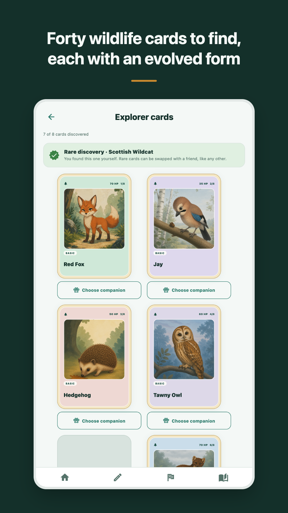
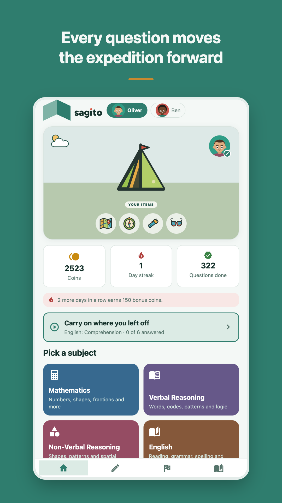
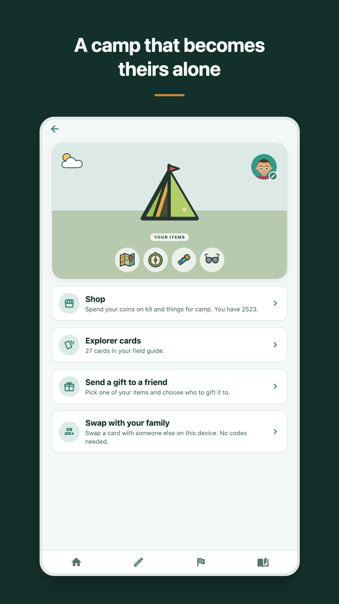

Big dreams. Small steps. A little adventure every day.
The 11+ journey can feel like a long, lonely road — for children and parents alike. Sagito brings encouragement, companionship and a little adventure to each step, helping young explorers build confidence and enjoy learning alongside friends and family.
{kind=link}

{kind=link}

{kind=link}

With maths, English, verbal and non-verbal reasoning, Sagito helps children practise important skills and discover new ways to solve problems. Manageable sessions make it easier to build a steady routine, with practice that adapts as they progress.
Every explorer deserves a companion. A friendly companion offers encouragement, tells a few jokes and shares fun facts — bringing a smile to practice time and helping children feel supported as they learn.
The adventure is even more fun together. Children can collect and swap cards, gift items, and share the journey with friends and family. There are discoveries to celebrate, little acts of kindness to share and achievements to feel proud of along the way.
For parents, it’s a supportive way to make practice part of everyday life. For children, it’s a chance to try, learn and discover what they can do.
Because preparing for the 11+ is about more than finding the right answer. It’s about building the confidence to have a go, the patience to keep trying and a curiosity that lasts beyond the exam.
Help your young explorer take their next step with Sagito.
Support — getting in touch
Email info@sagito.app. A person reads it, and we aim to reply within two working days.
It helps to say which device you are on and what you were doing at the time. Please do not send anything about your child that we do not need — we hold no account for you and would rather not start one.
Forgotten the parent PIN
Tap Forgotten your PIN? on the keypad and enter the recovery word chosen when the PIN was set. That clears the PIN and lets you choose a new one. Nothing your explorers have done is lost.
If the recovery word has gone too, we cannot recover it for you — it never leaves the device, so we have never had a copy. Reinstalling the app will let you set a fresh PIN, but it also clears the explorers and their progress.
A purchase has not appeared
Open the grown-up area and tap Restore purchases. Purchases are tied to the App Store or Google Play account that made them, so restoring works on any device signed in to that account.
If it still does not appear, email us with the store receipt and we will look into it.
Managing or cancelling a subscription
Sagito Plus is billed by Apple or Google, not by us, so it is cancelled in their settings rather than in the app. The grown-up area has a link straight to the right page. Cancelling stops the next payment and leaves the current period running.
Nothing an explorer has earned is taken away when a subscription ends — the cards, coins and campsite stay. Only the extra questions stop.
Deleting everything
The grown-up area, under Privacy, has an option that erases every explorer, all their progress, your PIN and your recovery word. There is nothing to delete at our end, because nothing was ever sent to us.
Privacy
Read the privacy noticeSagito is not affiliated with any exam board or school. Questions are ours, not any school’s own papers.